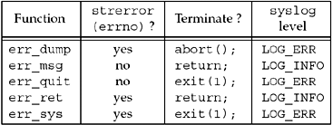

| [ Team LiB ] |
|
D.3 Standard Error FunctionsWe define our own set of error functions that are used throughout the text to handle error conditions. The reason for using our own error functions is to let us write our error handling with a single line of C code, as in if (error condition) err_sys (printf format with any number of arguments); instead of if (error condition) { char buff [2002]; snprintf(buff, sizeof (buff), printf format with any number of arguments); perror(buff); exit (1); } Our error functions use the variable-length argument list facility from ANSI C. See Section 7.3 of [Kernighan and Ritchie 1988] for additional details. Figure D.3 lists the differences between the various error functions. If the global integer daemon_proc is nonzero, the message is passed to syslog with the indicated level; otherwise, the error is output to standard error. Figure D.3. Summary of our standard error functions. Figure D.4 shows the first five functions from Figure D.3. Figure D.4 Our standard error functions.lib/error.c
1 #include "unp.h"
2 #include <stdarg.h> /* ANSI C header file */
3 #include <syslog.h> /* for syslog() */
4 int daemon_proc; /* set nonzero by daemon_init() */
5 static void err_doit(int, int, const char *, va_list);
6 /* Nonfatal error related to system call
7 * Print message and return */
8 void
9 err_ret(const char *fmt, ...)
10 {
11 va_list ap;
12 va_start(ap, fmt);
13 err_doit(1, LOG_INFO, fmt, ap);
14 va_end(ap);
15 return;
16 }
17 /* Fatal error related to system call
18 * Print message and terminate */
19 void
20 err_sys(const char *fmt, ...)
21 {
22 va_list ap;
23 va_start(ap, fmt);
24 err_doit(1, LOG_ERR, fmt, ap);
25 va_end(ap);
26 exit(1);
27 }
28 /* Fatal error related to system call
29 * Print message, dump core, and terminate */
30 void
31 err_dump(const char *fmt, ...)
32 {
33 va_list ap;
34 va_start(ap, fmt);
35 err_doit(1, LOG_ERR, fmt, ap);
36 va_end(ap);
37 abort(); /* dump core and terminate */
38 exit(1); /* shouldn't get here */
39 }
40 /* Nonfatal error unrelated to system call
41 * Print message and return */
42 void
43 err_msg(const char *fmt, ...)
44 {
45 va_list ap;
46 va_start(ap, fmt);
47 err_doit(0, LOG_INFO, fmt, ap);
48 va_end(ap);
49 return;
50 }
51 /* Fatal error unrelated to system call
52 * Print message and terminate */
53 void
54 err_quit(const char *fmt, ...)
55 {
56 va_list ap;
57 va_start(ap, fmt);
58 err_doit(0, LOG_ERR, fmt, ap);
59 va_end(ap);
60 exit(1);
61 }
62 /* Print message and return to caller
63 * Caller specifies "errnoflag" and "level" */
64 static void
65 err_doit(int errnoflag, int level, const char *fmt, va_list ap)
66 {
67 int errno_save, n;
68 char buf[MAXLINE + 1];
69 errno_save = errno; /* value caller might want printed */
70 #ifdef HAVE_VSNPRINTF
71 vsnprintf(buf, MAXLINE, fmt, ap); * safe */
72 #else
73 vsprintf(buf, fmt, ap); /* not safe */
74 #endif
75 n = strlen(buf);
76 if (errnoflag)
77 snprintf(buf + n, MAXLINE - n, ": %s", strerror(errno_save));
78 strcat(buf, "\n");
79 if (daemon_proc) {
80 syslog(level, buf);
81 } else {
82 fflush(stdout); /* in case stdout and stderr are the same */
83 fputs(buf, stderr);
84 fflush(stderr);
85 }
86 return;
87 }
|
| [ Team LiB ] |
|